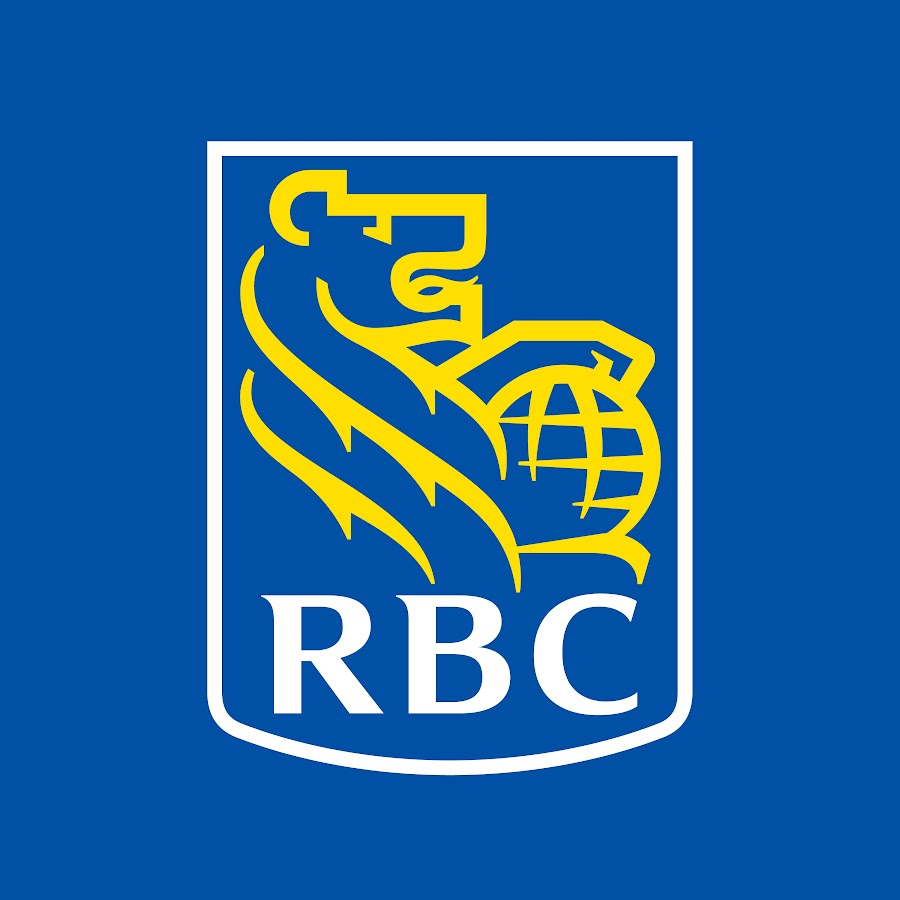

May 2026 — August 2026Data Engineering Intern
RBC Global Asset Management
Built the Python framework for an agent-driven workflow that joins mutual fund data from S3 (CSV, JSON, Parquet) with Trino tables across 4 scenarios, saving 4 hours weekly.
Orchestrated Spark jobs and SQL queries with Airflow DAGs, completing 25 consecutive runs without failure.
Verified workflow outputs with a PyTest suite of SQL checks, reaching 95% coverage and validating results in Jupyter Notebook.